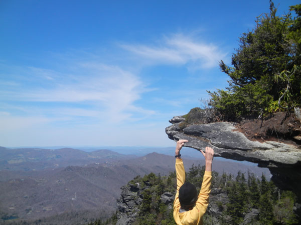
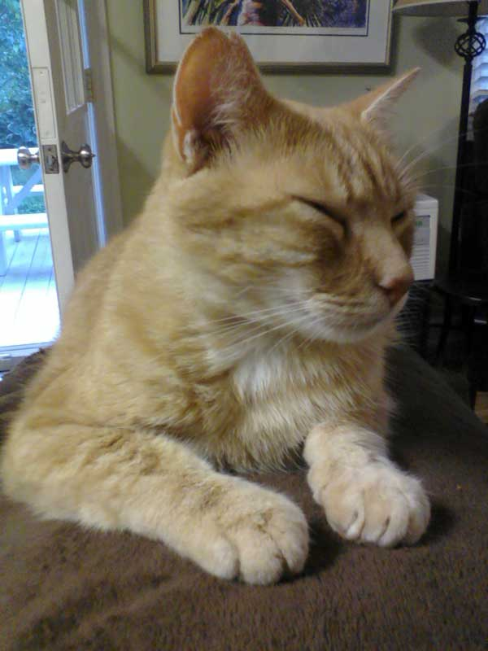

Welcome to TechRunner.org, a site featuring documentation of my mission to learn about computer science and lots of cool websites, tips, and downloads so you can learn too. TechRunner's goal is to offer you the knowledge you need to understand things like web development, troubleshooting, programming, and more.
TechRunner began in May 2012 as a first-time web development project.
Right now, "we" are a single webmaster, Josh and the Managing Supervisor of Motivational Operations, Mondo. I am passionate about everything digital, and I want to share that with the web. See my profile and Mondo's profile below!

I am a highly motivated high school student interested in everything digital. In my free time, I like to play Minecraft, the Minecraft Technic Pack, and run. I am a waitlist applicant to North Carolina School of Science and Math and hope I can get in - to take amazing classes and be around other motivated people. I wanted to get practice with web development and have my own website, so I began the development of TechRunner. I also like to run, hence the site name "TechRunner".
Feel free to contact me here:
josh@techrunner.org

Mondo is a very unmotivated cat who rules the household. He spends his time stretching in the 'nap' position and eating food. Occasionally, when he gets hungry, he brings different presents to the door to please his humble subordinates. Mondo is the Managing Supervisor of Motivational Operations, specializing in soft fur and welcoming meows. Mondo does not plan on changing his daily schedule of sleep, eat, sleep, meow and get a massage, sleep, eat, and sleep. Mondo is the most active member of the staff, especially when it comes to typing.
You can contact Mondo here:
mondo@techrunner.org